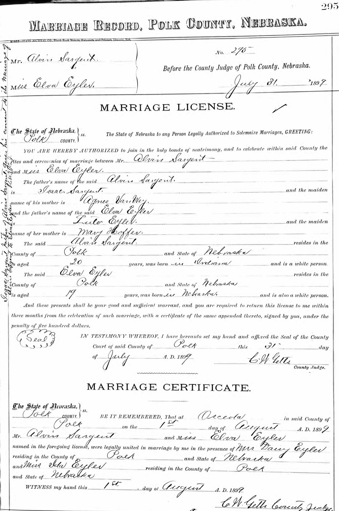
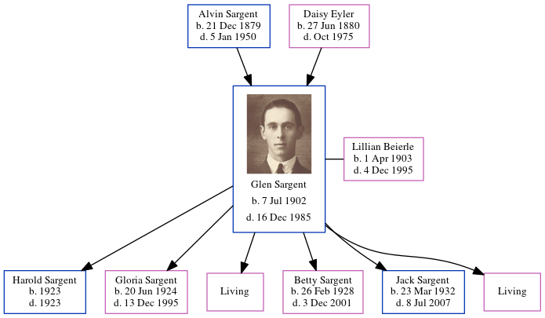

Daisy Elva Sargent (née Eyler) 1880 - 1975
[ Home ] | [ Calendar ] | [ Surnames Index ] | [ Errors ] | [ Family History ]Daisy Eyler, the wife of Alvin Edmund Sargent (the third cousin three-times-removed on the mother's side of Nigel Horne), was born in Nebraska, USA on 27 Jun 18801,2 and married Alvin (an agricultural labourer with whom she had 3 children: Mervin Charles, Glen Russel and Bessie Irene) in Osceola, Polk, Nebraska on 1 Aug 1899.
During her life, she was living in Canada, Polk, Nebraska on 15 Apr 19103 and on 1 Apr 19304; and in Shelby, Polk, Nebraska on 1 Apr 19405.
She died in Oct 1975 in Polk, Nebraska, USA1,2 and was buried at Graceland Cemetery, Shelby, Nebraska after 1 Oct 19751.
Children
- Mervin Charles was born on 19 Feb 1900
- Glen Russel was born on 7 Jul 1902
- Bessie Irene was born on 12 Mar 1904
Citations
- U.S., Find A Grave Index, 1600s-Current Ancestry.com Operations, Inc.
- United States Billion Graves index - Findmypast
- US Census 1910 - Findmypast (was age 29 and the wife of the head of the household)
- US Census 1930 - Findmypast (was age 49 and the wife of the head of the household)
- US Census 1940 - Findmypast (was age 59 and the wife of the head of the household)
Media
Sargent Headstone

Alvin Sargent - Daisy Eyler - marriage certificate

1900 US Census Transcription - USC-1900-004120377-00662-021
1910 US Census Transcription - USC-1910-004972823-00924-030
1920 US Census Transcription - USC-1920-004966379-00013-092
US Census 1940 - USC/1940/1476762146
US Census 1930 - USC/1930/004951879/00032/008
United States Billion Graves index - US/BMD/BILLION024132628
Family Tree
Map
Generated by ged2site. Last updated on Jul 3, 2024
Known Issues
Marriage date (1 Aug 1899) has no citations
No records of living with anyone
Adding date of burial as 'aft Oct 1975'
Census information missing between Census US 1910 and Census US 1930